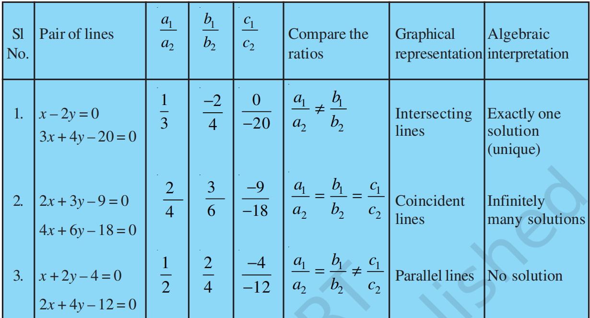
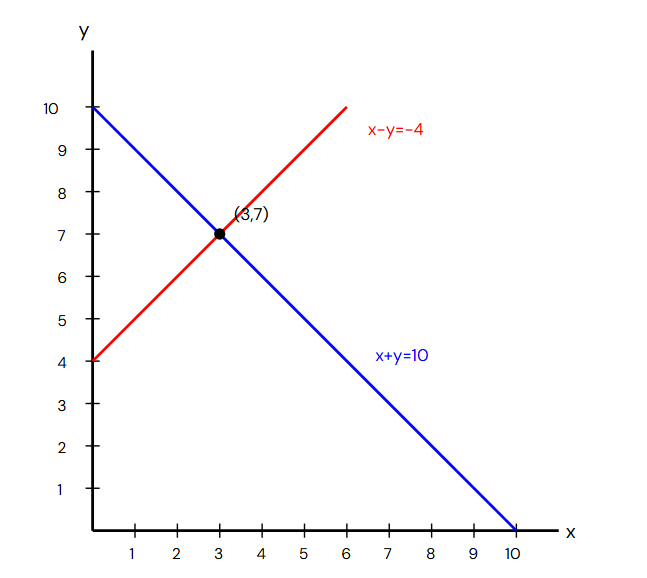
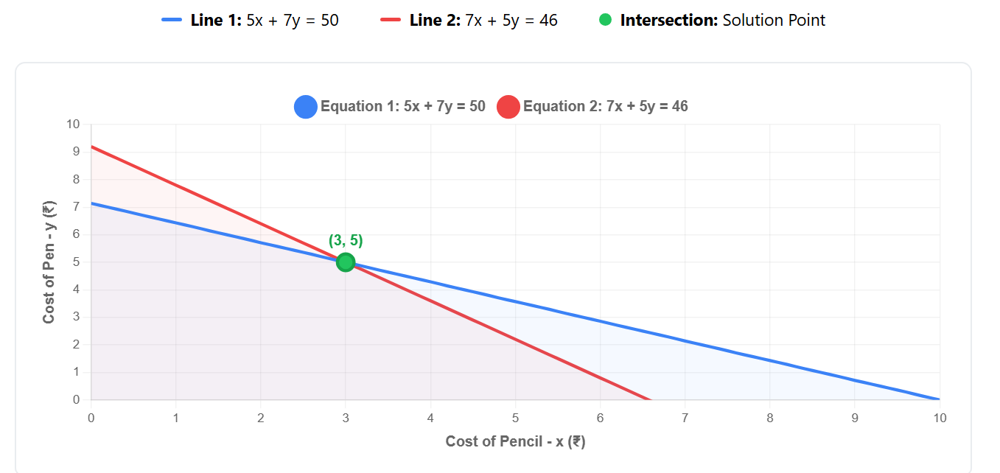
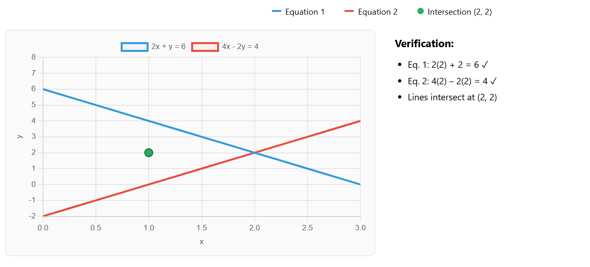

Mathematics solution NCERT
Class 10 - Chapter 3: Pair of Linear Equations in Two Variables
Important Concept

Source- NCERT
Exercise 3.1
Question 1 (i).
10 students of Class X took part in a Mathematics quiz.
If the number of girls is 4 more than the number of boys, find the number of boys and girls who took part in the quiz graphically.
Solution:
Let
x = number of boysand
y = number of girlsForm the linear equations.
Total number of students is 10.
x+y=10Girls are 4 more than boys.
y=x+4or
x-y=-4Table for plotting the graph.
Equation: x + y = 10
| x | y |
|---|---|
| 0 | 10 |
| 2 | 8 |
| 4 | 6 |
| 6 | 4 |
| 8 | 2 |
| 10 | 0 |
Equation: x − y = −4
| x | y |
|---|---|
| 0 | 4 |
| 2 | 6 |
| 4 | 8 |
| 6 | 10 |

Read the point of intersection.
The two graphs intersect at
(3, 7) Therefore, x = 3 and y = 7
Jab bhi graph paper par 2 lines intersect karengi
to us intersection point ke coordinates dekhne hain. wohi coordinates answers honge.
like is question me coordinates (3, 7) hain iska matlab ye hai ki is ordered pair me pehli value
x ki or dusri value y ki hogi. matlab x = 3 and y = 7. bas bat khatm
Question 1 (ii)
5 pencils and 7 pens together cost ₹50, whereas 7 pencils and 5 pens together cost ₹46. Find the cost of one pencil and that of one pen.
Solution:
Let the cost of one pencil be ₹x and the cost of one pen be ₹y.
According to the given conditions, we get the following pair of linear equations:
5x + 7y = 50
7x + 5y = 46
Now we will solve these equations graphically.Table for plotting the graph of 5x + 7y = 50
Table for the equation: 5x + 7y = 50
| x | y |
|---|---|
| 3 | 5 |
| 10 | 0 |
| 24 | -10 |
Table for the equation: 7x + 5y = 46
| x | y |
|---|---|
| 3 | 5 |
| 16 | -13.2 |
| 1 | 7.8 |
Graph:

Cost of one pencil = ₹3
Cost of one pen = ₹5
2. On comparing the ratios $\dfrac{a_1}{a_2}$, $\dfrac{b_1}{b_2}$ and $\dfrac{c_1}{c_2}$, find whether the given pair of linear equations intersect at one point, are parallel or coincident.
(i) $5x-4y+8=0$ and $7x+6y-9=0$
Step 1: Compare the coefficients.
$$ a_1=5,\quad b_1=-4,\quad c_1=8 $$ $$ a_2=7,\quad b_2=6,\quad c_2=-9 $$Step 2: Find the ratios.
$$ \frac{a_1}{a_2}=\frac{5}{7} $$ $$ \frac{b_1}{b_2}=\frac{-4}{6}=-\frac23 $$ $$ \frac{c_1}{c_2}=\frac{8}{-9}=-\frac89 $$Since
$$ \frac{a_1}{a_2}\ne\frac{b_1}{b_2} $$The two lines intersect at one point.
Answer: Intersecting lines (Unique Solution)
(ii) $9x+3y+12=0$ and $18x+6y+24=0$
Step 1: Compare the coefficients.
$$ a_1=9,\quad b_1=3,\quad c_1=12 $$ $$ a_2=18,\quad b_2=6,\quad c_2=24 $$Step 2: Find the ratios.
$$ \frac{a_1}{a_2}=\frac9{18}=\frac12 $$ $$ \frac{b_1}{b_2}=\frac36=\frac12 $$ $$ \frac{c_1}{c_2}=\frac{12}{24}=\frac12 $$Since
$$ \frac{a_1}{a_2}=\frac{b_1}{b_2}=\frac{c_1}{c_2} $$The two lines are coincident.
Answer: Coincident Lines (Infinitely Many Solutions)
(iii) $6x-3y+10=0$ and $2x-y+9=0$
Step 1: Compare the coefficients.
$$ a_1=6,\quad b_1=-3,\quad c_1=10 $$ $$ a_2=2,\quad b_2=-1,\quad c_2=9 $$Step 2: Find the ratios.
$$ \frac{a_1}{a_2}=\frac62=3 $$ $$ \frac{b_1}{b_2}=\frac{-3}{-1}=3 $$ $$ \frac{c_1}{c_2}=\frac{10}{9} $$Since
$$ \frac{a_1}{a_2}=\frac{b_1}{b_2}\ne\frac{c_1}{c_2} $$The two lines are parallel.
Answer: Parallel Lines (No Solution)
3. On comparing the ratios $\dfrac{a_1}{a_2}$, $\dfrac{b_1}{b_2}$ and $\dfrac{c_1}{c_2}$, determine whether the pair of equations is consistent or inconsistent.
(i) $3x+2y=5$ and $2x-3y=7$
Standard form:
$$ 3x+2y-5=0 $$ $$ 2x-3y-7=0 $$ $$ a_1=3,\;b_1=2,\;c_1=-5 $$ $$ a_2=2,\;b_2=-3,\;c_2=-7 $$ $$ \frac{a_1}{a_2}=\frac32,\qquad \frac{b_1}{b_2}=-\frac23 $$Since
$$ \frac{a_1}{a_2}\ne\frac{b_1}{b_2} $$The equations have a unique solution.
Answer: Consistent (Independent)
(ii) $2x-3y=8$ and $4x-6y=9$
Standard form:
$$ 2x-3y-8=0 $$ $$ 4x-6y-9=0 $$ $$ \frac{a_1}{a_2}=\frac24=\frac12 $$ $$ \frac{b_1}{b_2}=\frac{-3}{-6}=\frac12 $$ $$ \frac{c_1}{c_2}=\frac{-8}{-9}=\frac89 $$Since
$$ \frac{a_1}{a_2}=\frac{b_1}{b_2}\ne\frac{c_1}{c_2} $$Answer: Inconsistent (No Solution)
(iii) $\dfrac32x+\dfrac53y=7$ and $9x-10y=14$
Remove fractions from the first equation by multiplying by $6$.
$$ 9x+10y=42 $$Standard forms:
$$ 9x+10y-42=0 $$ $$ 9x-10y-14=0 $$ $$ \frac{a_1}{a_2}=\frac99=1 $$ $$ \frac{b_1}{b_2}=\frac{10}{-10}=-1 $$Since
$$ \frac{a_1}{a_2}\ne\frac{b_1}{b_2} $$Answer: Consistent (Independent)
(iv) $5x-3y=11$ and $-10x+6y=-22$
Standard form:
$$ 5x-3y-11=0 $$ $$ -10x+6y+22=0 $$ $$ \frac{a_1}{a_2}=\frac5{-10}=-\frac12 $$ $$ \frac{b_1}{b_2}=\frac{-3}{6}=-\frac12 $$ $$ \frac{c_1}{c_2}=\frac{-11}{22}=-\frac12 $$Since
$$ \frac{a_1}{a_2}=\frac{b_1}{b_2}=\frac{c_1}{c_2} $$Answer: Consistent (Dependent, Infinitely Many Solutions)
(v) $\dfrac43x+2y=8$ and $2x+3y=12$
Multiply the first equation by $3$.
$$ 4x+6y=24 $$Standard forms:
$$ 4x+6y-24=0 $$ $$ 2x+3y-12=0 $$ $$ \frac{a_1}{a_2}=\frac42=2 $$ $$ \frac{b_1}{b_2}=\frac63=2 $$ $$ \frac{c_1}{c_2}=\frac{-24}{-12}=2 $$Since
$$ \frac{a_1}{a_2}=\frac{b_1}{b_2}=\frac{c_1}{c_2} $$Answer: Consistent (Dependent, Infinitely Many Solutions)
4. Which of the following pairs of linear equations are consistent/inconsistent? If consistent, obtain the solution graphically.
(i) $x+y=5$ and $2x+2y=10$
Step 1: Convert into standard form.
$$ x+y-5=0 $$ $$ 2x+2y-10=0 $$Step 2: Compare the ratios.
$$ a_1=1,\quad b_1=1,\quad c_1=-5 $$ $$ a_2=2,\quad b_2=2,\quad c_2=-10 $$ $$ \frac{a_1}{a_2}=\frac12,\qquad \frac{b_1}{b_2}=\frac12,\qquad \frac{c_1}{c_2}=\frac{-5}{-10}=\frac12 $$Since
$$ \frac{a_1}{a_2}=\frac{b_1}{b_2}=\frac{c_1}{c_2} $$The equations are consistent and represent coincident lines.
Table for plotting:
| $x$ | $y$ |
|---|---|
| $0$ | $5$ |
| $5$ | $0$ |
Answer: Infinitely many solutions.
(ii) $x-y=8$ and $3x-3y=16$
Step 1: Convert into standard form.
$$ x-y-8=0 $$ $$ 3x-3y-16=0 $$Step 2: Compare the ratios.
$$ a_1=1,\quad b_1=-1,\quad c_1=-8 $$ $$ a_2=3,\quad b_2=-3,\quad c_2=-16 $$ $$ \frac{a_1}{a_2}=\frac13,\qquad \frac{b_1}{b_2}=\frac13,\qquad \frac{c_1}{c_2}=\frac{-8}{-16}=\frac12 $$Since
$$ \frac{a_1}{a_2}=\frac{b_1}{b_2}\ne\frac{c_1}{c_2} $$Answer: The equations are inconsistent. Hence, there is no solution.
Table for plotting:
| $x$ | $y$ | Equation |
|---|---|---|
| $8$ | $0$ | $x-y=8$ |
| $0$ | $-8$ | $x-y=8$ |
| $\dfrac{16}{3}$ | $0$ | $3x-3y=16$ |
| $0$ | $-\dfrac{16}{3}$ | $3x-3y=16$ |
(iii) $2x+y-6=0$ and $4x-2y-4=0$
Step 1: Compare the ratios.
$$ a_1=2,\quad b_1=1,\quad c_1=-6 $$ $$ a_2=4,\quad b_2=-2,\quad c_2=-4 $$ $$ \frac{a_1}{a_2}=\frac12,\qquad \frac{b_1}{b_2}=-\frac12 $$Since
$$ \frac{a_1}{a_2}\ne\frac{b_1}{b_2} $$The equations are consistent with a unique solution.
Table for plotting:
| $x$ | $y$ | Equation |
|---|---|---|
| $0$ | $6$ | $2x+y-6=0$ |
| $3$ | $0$ | $2x+y-6=0$ |
| $0$ | $-2$ | $4x-2y-4=0$ |
| $1$ | $0$ | $4x-2y-4=0$ |
Algebraic verification:
From $$ 2x+y=6 $$ $$ 4x-2y=4 $$ Multiply the first equation by $2$: $$ 4x+2y=12 $$ Adding, $$ 8x=16 $$ $$ x=2 $$ Substitute in $$ 2x+y=6 $$ $$ 2(2)+y=6 $$ $$ y=2 $$Answer:
$$ (x,y)=(2,2) $$
(iv) $2x-2y-2=0$ and $4x-4y-5=0$
Step 1: Compare the ratios.
$$ a_1=2,\quad b_1=-2,\quad c_1=-2 $$ $$ a_2=4,\quad b_2=-4,\quad c_2=-5 $$ $$ \frac{a_1}{a_2}=\frac12,\qquad \frac{b_1}{b_2}=\frac12,\qquad \frac{c_1}{c_2}=\frac{-2}{-5}=\frac25 $$Since
$$ \frac{a_1}{a_2}=\frac{b_1}{b_2}\ne\frac{c_1}{c_2} $$Answer: The equations are inconsistent. Hence, there is no solution.
Table for plotting:
| $x$ | $y$ | Equation |
|---|---|---|
| $1$ | $0$ | $2x-2y-2=0$ |
| $0$ | $-1$ | $2x-2y-2=0$ |
| $\dfrac54$ | $0$ | $4x-4y-5=0$ |
| $0$ | $-\dfrac54$ | $4x-4y-5=0$ |
5. Half the perimeter of a rectangular garden, whose length is 4 m more than its width, is 36 m. Find the dimensions of the garden.
Solution:
Let the width of the garden be
$$ x\text{ m} $$Then, the length of the garden is
$$ (x+4)\text{ m} $$Half of the perimeter is given as
$$ 36\text{ m} $$Now,
$$ \text{Length}+\text{Width}=36 $$Substitute the values.
$$ (x+4)+x=36 $$ $$ 2x+4=36 $$ $$ 2x=32 $$ $$ x=16 $$Therefore,
$$ \text{Width}=16\text{ m} $$ $$ \text{Length}=16+4=20\text{ m} $$Answer:
$$ \boxed{\text{Length}=20\text{ m},\qquad \text{Width}=16\text{ m}} $$6. Given the linear equation $2x+3y-8=0$, write another linear equation in two variables such that the geometrical representation of the pair so formed is:
(i) Intersecting Lines
For intersecting lines, the ratios should satisfy
$$ \frac{a_1}{a_2}\ne\frac{b_1}{b_2} $$One possible equation is
$$ x-y+2=0 $$Here,
$$ \frac21\ne\frac3{-1} $$Hence, the lines intersect at one point.
Answer:
$$ \boxed{x-y+2=0} $$(ii) Parallel Lines
For parallel lines, the ratios should satisfy
$$ \frac{a_1}{a_2}=\frac{b_1}{b_2}\ne\frac{c_1}{c_2} $$One possible equation is
$$ 4x+6y-20=0 $$Since
$$ \frac24=\frac36=\frac12 $$and
$$ \frac{-8}{-20}=\frac25 $$Therefore,
$$ \frac24=\frac36\ne\frac{-8}{-20} $$Hence, the lines are parallel.
Answer:
$$ \boxed{4x+6y-20=0} $$(iii) Coincident Lines
For coincident lines, the ratios should satisfy
$$ \frac{a_1}{a_2}=\frac{b_1}{b_2}=\frac{c_1}{c_2} $$Multiply the given equation by $2$.
$$ 2(2x+3y-8)=0 $$ $$ 4x+6y-16=0 $$Now,
$$ \frac24=\frac36=\frac{-8}{-16}=\frac12 $$Hence, the two lines are coincident.
Answer:
$$ \boxed{4x+6y-16=0} $$7. Draw the graphs of the equations $x-y+1=0$ and $3x+2y-12=0$. Determine the coordinates of the vertices of the triangle formed by these lines and the $x$-axis.
Solution:
Step 1: Find the points for the first line.
Given, $$ x-y+1=0 $$ $$ y=x+1 $$Table for plotting:
| $x$ | $y$ |
|---|---|
| $-1$ | $0$ |
| $0$ | $1$ |
Step 2: Find the points for the second line.
Given, $$ 3x+2y-12=0 $$ $$ 3x+2y=12 $$Table for plotting:
| $x$ | $y$ |
|---|---|
| $0$ | $6$ |
| $4$ | $0$ |
Step 3: Find the point of intersection of the two lines.
From $$ y=x+1 $$ Substitute into $$ 3x+2y=12 $$ $$ 3x+2(x+1)=12 $$ $$ 3x+2x+2=12 $$ $$ 5x=10 $$ $$ x=2 $$ Substitute in $$ y=x+1 $$ $$ y=2+1=3 $$ Therefore, $$ \boxed{(2,3)} $$ is the point of intersection.Step 4: Find the vertices of the triangle.
The first line cuts the $x$-axis at
$$ (-1,0) $$The second line cuts the $x$-axis at
$$ (4,0) $$The two lines intersect at
$$ (2,3) $$Hence, the vertices of the triangle are
$$ \boxed{(-1,0),\ (4,0),\ (2,3)} $$Answer:
$$ \boxed{\text{Vertices of the triangle }=(-1,0),\ (4,0),\ (2,3)} $$Note: Draw the two lines using the above tables, mark the three vertices, and shade the triangular region enclosed by the two lines and the $x$-axis.
(Note- For drawing graphs you can use the tool.
click on the link below to draw the graph using desmos: )
Desmos- A graphing Calculator